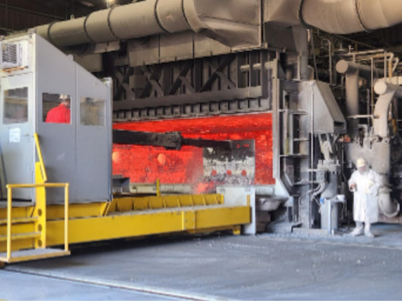

"A senior caster should have a strong awareness of what’s going on while the casting operation is in progress, an attention to detail. A senior caster should be able to multi task, to be able to attend to the steps that make up the overall casting operation." "In the role of senior caster a operator should be a up and coming leader that is self sufficient and self motivated. Senior caster should take ownership in all aspects casting including the mold shop. As a senior caster the operatpr is already proficient in casting and should pass knowledge on to operators and new operators to make them better." "In order to be a successful senior caster, one must be able to multitask during turnarounds and ensure that other casters are doing their job along with keeping up with your own duties as a caster. Take ownership of the casting area such as housekeeping and minor troubleshooting. Have knowledge of GC casting equipment and track time by knowing the shift goals for the day."
The Senior Caster is a leadership position in the aluminum casting process, responsible for overseeing the operation, maintenance, and continuous improvement of casting systems while mentoring and guiding team members to achieve operational excellence. This role builds on advanced technical and problem-solving skills, emphasizing the ability to manage time effectively, both individually and for a team, and drive results through collaboration and empowerment.
Key responsibilities include coordinating casting operations, facilitating the resolution of complex problems, and implementing and measuring process improvements. The Senior Caster performs and oversees preventative and first-line reactive maintenance on machines, conducts inspections, and ensures optimal performance of equipment. The role also requires intermediate troubleshooting skills, proficiency in machine operation, and a strong understanding of safety and quality standards.
The Senior Caster must possess exceptional communication skills, demonstrating empathy, active listening, and the ability to guide and empower team members. Advanced skills in coordinating operations, reporting, and data analysis are critical for tracking progress and aligning team efforts with production goals. This position requires intermediate computer skills, including the use of MS Office, APICS, and SAP, as well as the ability to analyze and present data effectively. The ideal candidate is self-aware, adaptable, and committed to continuous learning and personal development.